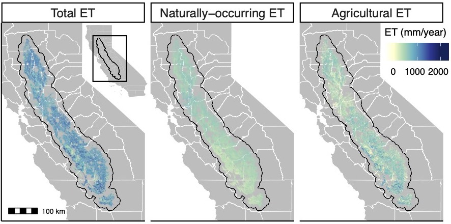

ABOUT ME
Environmental science, remote sensing, and machine learning.
I am a PhD student at the Bren School for Environmental Science and Management at UC Santa Barbara.
Ashley Larsen, Kelly Caylor, and Tamma Carleton advise me, and my work is supported by the NSF GRFP, the Eugene Cota-Robles Fellowship, and the Fulbright Fellowship Program.
I hold a BA in Statistics from UC Berkeley, and am the 2020 recipient of UC Berkeley's University Medal.
I am also the 2024 recipient of the AGU Science for Solutions Award.
My research focuses on water use and climate resilience in agriculture with the goal of improving water management in water-scarce regions.
I use satellite remote sensing and artificial intelligence to analyze irrigation systems and their influence on water resources.
My work spans from data-rich agricultural regions like California to under-resourced areas in Sub-Saharan Africa, with the goal of balancing food security, sustainability, and economic growth.
MY WORK
Here are some of my recent research projects.

Saving water in California Agriculture
California is one of the most agriculturally productive and water stressed regions in the world.
This project uses satellites and machine learning techniques to estimate crop water consumption in the California Central Valley.
These estimates can be used to quantify the water saving potential of different water management strategies, such as crop switching, fallowing, and improvements in irrigation efficiency.
This work has been published in Nature Communications.
stagg:: A data pre-processing R package for climate impacts analysis
stagg is an R package that transforms raw gridded climate data into tabular administrative-level variables intended for use in climate econometrics analyses.
Flexible options let users control specifications like nonlinear transformations, weighted spatial aggregation, and temporal aggregation with a few lines of code.
Our package GitHub is here, and a helpful cheatsheet can be downloaded here.
It's a work in progress -- please send us feedback!
Validating spatio-temporal environmental machine learning models
Machine learning has revolutionized environmental sciences by estimating scarce environmental data, but properly validating such data is cruicial for its appropriate downstream use.
In this work, I invesitgate the impact of common validation pitfalls on the interpretation of the validity of environmental machine learning models.
I find that models with poor performance can appear to perform well when evaluated on the wrong data splits, and that this effect is exacerbated when not accounting for Simpson's paradox.
This work has been published in Envrironmental Research Communications.
West Nile Virus Risk Maps
West Nile virus (WNV) is the most prevaluent mosquito-borne disease in California, and mitigation hinges on fine grained understanding of the risk landscape.
We use high resolution land surface temperature measurements from ECOSTRESS in conjuction with mechanistic understandings of WNV risk to map mosquito biting rates and transmission rates at unprecedented spatial and temporal scales.
This work is published in Environmental Research Letters, and a follow-on study further validating this method is in review.
Downscaling remote sensing data using deep learning
High resolution remote sensing data has revolutionized the environmental sciences, but some key data types are only available at coarse resolutions.
This project uses deep learning to downscale coarse resolution data to fine resolution data.
We use a U-Net architecture to predict fine resolution land surface temperature from coarse resolution land surface temperature and high resolution red, green, and blue imagery.
We additionally devise a strategy to minimize the amount of ground truth data needed to train the model.
COVID-19 in Schools
In an effort to curb the COVID-19 epidemic, government officials have halted the functioning of many institutions, including schools.
However, many questions remain unanswered regarding the effectiveness of this intervention, and if and when to reopen schools.
This project, conducted by the Remais Group at UC Berkeley, uses an agent based SEIR model to assess the effect of school closures on the COVID-19 epidemic in the Bay Area.
The manuscript is published in the Journal of the Joyal Society Interface.
HIV in French Guiana
According to the World Health Organization, French Guiana is the site of a generalized HIV epidemic.
On the border of French Guiana and Brazil, the prevalence and severity of HIV cases is significantly more severe.
In partnership with IDsante, a local NGO, this project aims to characterize the epidemic on the border and investigate the contibuting social, economic, and political factors.
Read more about this research here,
here,
and here.
UNDERGRADUATE STUDENTS
I mentor to contribute to a stronger, inclusive scientific future.